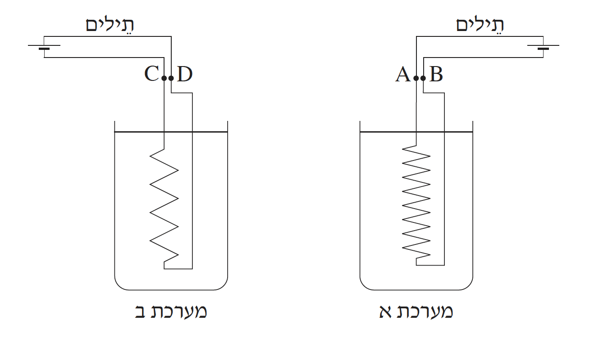

שאלה 2
כדי לחמם כוס מים מטמפרטורת החדר עד לרתיחה, נדרשת אנרגיה בשיעור 63,000J.
חשבו מה צריך להיות ההספק (הממוצע) של גוף חימום כדי שהמים ירתחו בתוך 2 דקות
(הניחו שכל האנרגיה של גוף החימום עוברת למים). (6 נקודות)
בסרטוט שלפניכם מוצגות שתי מערכות, מערכת א ומערכת ב, כל מערכת מורכבת מכוס מים שטבול בה גוף חימום. הכוסות וכמות המים בשתי המערכות זהות, ואילו גופי החימום שונים.
כל אחד מגופי החימום מפתח אותו הספק -- ההספק שחישבתם בסעיף א.
במערכת א המתח בין ההדקים של גוף החימום הוא VAB = 240V,
במערכת ב המתח בין ההדקים של גוף החימום הוא VCD = 24V.

חשבו את עוצמת הזרם העובר דרך כל אחד מגופי החימום. (8 נקודות)
נתון כי בשתי המערכות ההתנגדות הכוללת של התילים המחברים את גופי החימום
למקור המתח היא 0.1Ω.
חשבו מהו ההספק המתפתח על תילים אלה בכל אחת מהמערכות. (8 נקודות)
חשבו את הנצילות (יעילות) של כל אחת מהמערכות (הזניחו את ההתנגדות הפנימית של מקור המתח). (6 נקודות)
בארצות-הברית המתח ברשת החשמל הוא 120V, ואילו בישראל המתח הוא 240V.
הסתמכו על משמעות התוצאות שחישבתם בסעיף ד בלבד, וקבעו באיזו רשת חשמל
הנצילות גדולה יותר, בישראל או בארצות-הברית. נמקו את קביעתכם. (5 1/3 נקודות)